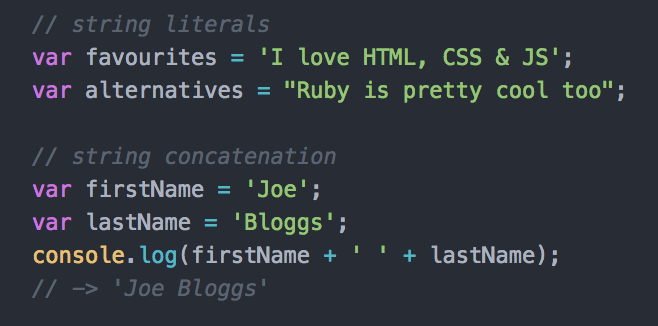

Learning Outcomes
- Learn technical vocabulary and high level concepts to help communicate your ideas
- Understand the diffence between using HTML, CSS & JavaScript
- Understand how backend languages and databases are used in the tech stack
How we'll do this
- You're going to learn the basics of four new languages
- Some of it will be very abstract
- Some of it won't make much sense at the beginning
All of this is OK :)
What is programming?
A set of instructions.
A recipe.
A step-by-step process.

Programming languages
(there are many!)


What do programming languages actually do?
They automate processes to give us less work.
They're good for:
- Making decisions
- Repeating tasks
- Remembering and storing data
- Displaying, logging data
Deciding on a programming language
Selection criteria:
- Ease to learn
- Support (e.g. Community, StackOverflow)
- Development time
- Frameworks, libraries
- Speed
Web Development
First a (very) Brief History of the Internet
-
50s/60s - ARPANET created in America to enable communication between two computers across a network.
-
70s - Transmission Control Protocol and Internet Protocol (referred) to as TCP/IP created to allow the separate mini-networks to communicate with each other.
-
90s - Tim Berners-Lee introduces the World Wide Web, which allows information to be freely accessible by anyone with a network connection

Frontend Code
- How things look
- Provides visual structure/hierarchy
- Animations
- Interactions
- Examples: HTML, CSS, JavaScript
Backend Code
- Interacts with database
- Provides data structure for application
- Functionality of a given website/service
- Preparation of 'dynamic' content
- Examples: Ruby, PHP, Java (not the same as JavaScript!)
How the web works

Browser parsing

Development

Development
Introducing HTML
Hypertext Markup Language
- Describes page content
- Defines page structure
- Defines page hierarchy
Introducing CSS
Cascading Stylesheets
- Styles the page
- Can provide animations
- Makes things look good!
Introducing JavaScript
JavaScript
- Deals with user interactions
- Can be used for animations
- Plus many many more things!
HTML Basics
Syntax

Self-closing tags
The exception to the previous HTML syntax example are elements that do not require inner content.
These are known as self-closing tags.

HTML attributes

HTML attribute uses
- Add extra information to a HTML element
- Used to target HTML elements (IDs, classes) for styling or JavaScript interaction.
- They can also be used to add data to elements, set values for input elements and provide paths to files, among many other uses.
- A useful resource for HTML attributes can be found here.
HTML snippet

New HTML tags
With the release of HTML5 came a new set of tags that could be used to structure code.
These tags provide the browser more semantic information on how your pages are layed out and also the type of content included.
New HTML5 tags include section, article, aside, header, footer. A more exhaustive list can be found at HTML5 Doctor.
Heading tags
Provide a hierarchy for our titles.

Content tags
Other content can also be wrapped in specific tags, which provide structure and also add default styling (without CSS!).

Task
Anchor tags
Anchor tags are the bedrock of the internet. They are what keep users constantly navigating around looking for new content. The href attribute is what points the link to a specific URL (or file).

Image tags
Image tags require a src attribute to provide the path to the image file. This can be a web URL or a file path within your project. The alt attribute is used to describe the image in case it can’t load.

Image asset file formats
Different file formats have different properties:
-
.pngSupports transparency and semi-transparency, great for logos, icons, and repeating background tiles. -
.jpegNo transparency, can be stored at different compression levels with varying amounts of "lossy-ness", typically the best format for photos. (Try to balance between photo quality and file size.) -
.gifCan have basic transparency and can cycle through a number of images, providing an animated asset.
CSS
CSS Syntax

CSS example
Here we are changing the size and colour of all <h1> tags and also changing the size of all <p> tags.

CSS selectors
It is possible to target HTML elements for styling in a number of different ways.

Styling text
Here are the most important and commonly used CSS properties for styling text:

Styling text
There are many places on the web to find the correct font for your site. But a great (and free) resource to start is Google Fonts. Simply choose the font, the weights and you get given a snippet similar to below to put in the head:

CSS colors (yep that's how to spell it in CSS!)
When declaring colours in CSS, there are 6 different options available to you:
- Keyword
- Hex code
- RGB
- RGBa
- HSL
- HSLa
What is programming?
Programming is the task of writing instructions in a language that the computer can understand to then perform those instructions.
Computers can perform tasks extremely quickly, but developers need to programmatically break down those tasks to provide step-by-step instructions to the computer.
Deciding on a programming language
Selection criteria:
- Ease to learn
- Support (e.g. Community, StackOverflow)
- Development time
- Frameworks, libraries
- Speed
What is JavaScript?
- It is NOT Java!
- Originally called Mocha, then LiveScript, then JavaScript, then ECMAScript (currently ES2015)
- A language that was created in 10 days by Brendan Eich (May 1995)
- Cross-platform scripting language (executes a series of commands without being compiled)
- Loosely typed language (you do not declare the data types of variables explicitly)
What can you do with it?
A lot!
- Add interactivity (jQuery)
- Single Page Applications (React, Vue.js)
- Analytics, testing (Google Analytics, Optimizely, Mouse Flow)
- Data visualisation (D3.js)
- 3D rendering in the browser (Three.js)
- Native application development (React Native)
- Plus much more!
Pseudo code
Pseudo code
A great way to break down a problem into small chunks is to use pseudo code.
Pseudo code is usually typed using comments, so that it has no effect on the program being written. It is typically written in a mixture of natural language and high-level programming constructs.
Pseudo-code example
A program that lets a player know whether he or she has passed the current level.

Task
In Pairs
Write the pseudo-code for a thermostat that checks the temperature every 10 minutes and aims to keep the temperature at a perfect level for us.
JavaScript Syntax
JavaScript downsides
JavaScript offers incredible flexibility as a programming language. Although that flexibility and the fact that it was initially created in 10 days means that it also has numerous bad parts (leading to a book called 'JavaScript: The Good Parts').
JavaScript libraries
To address certain downsides of the JavaScript language and to add convenient functionality, new JavaScript libraries began to emerge.
jQuery quickly took its place as the most highly used library, initially due to its cross-browser compatibility.
What is jQuery?
jQuery is a JavaScript library created by John Resig (released in 2006).
jQuery benefits
- Cleaner and more intuitive syntax
- Additional methods for simple DOM manipulation (e.g. adding/removing classes)
- Easy animation of elements and window (e.g. fading out an element, scrolling to a target element)
- AJAX - send and receive data from the server without refreshing the page
- Great plugin ecosystem for rapid development
- Plus more!
DOM manipulation
jQuery allows us to easily change the contents of the DOM and also change the appearance of DOM nodes (elements) in response to an event. Here are a few of the most common DOM manipulation methods:

A full list of DOM manipulation methods can be found here.
Task
AJAX
Asynchronous JavaScript and XML (AJAX) allows for the sending and receiving of data to and from a server, enabling a page's display to update without the need for a full window reload.
If you would like to learn more about AJAX, this Sitepoint article is a good starting point.
Programming concepts (using JavaScript)
Variables
Variables allow us to store data in our program for use later on. By assigning a value to a variable, we are effectively saving it in memory.
Assignment and re-assignment

Use the keyword var to assign a variable. If a variable has been
declared, you can then change its value using re-assignment.
Naming conventions
Variable names are usually written in lowerCamelCase. This means that the first word is lowercased and then any other words in the name are capitalised.
Data Type - Boolean

Booleans can have one of two values: true or false.
They most commonly appear in conditional statements (e.g. if/else).
Data Type - Number

Numbers are declared without quotation marks and can be used for arithmetic.
A number with decimal places are known as 'floats'. Numbers can have both positive and negative values.
Working with numbers

Data Type - String
Strings are used for working with words, sentences or sequences of characters. String literals are created by wrapping a sequence of characters with either single quotation marks ('hello') or double quotation marks ("hello").
Working with strings
Data Type - Null & Undefined
A variable that has not yet been assigned a value has a value of undefined.
undefined can also be assigned to a variable, although
it is recommended to use null.
null is the intentional absence of a value.
Data Type - Object
Objects are a collection of properties, with each property being a
{key: value} pair. The value of an object property can be
any data type as well a function. A property that has a function as the value
is known as a method.
Working with objects

Working with objects

Data Type - Array
Arrays are list-like objects that hold a collection of values. The also have built-in methods to allow for iterating over values and adding/removing values.
Each item in an array has an index. However, the index starts from 0, not 1. So the first value is at the 0 index.
Working with arrays

Comparisons
Comparisons - equality
It is common for values to be compared with one another in programming. Comparing values allows for the conditional running of certain blocks of code.
However, equality in JavaScript can get a little funky.
Comparing values


Always use === and !== to compare values, unless you have a good reason
Logical operators
Logical operators can be used to check if multiple expressions evaluate
to true or false or to check the opposite truthy/falsy
value.
Working with logical operators


Conditionals
As we have come across before, conditional statements can be used to control the flow of your program.
Using conditionals

Functions
Functions
Functions are mini programs within your larger program. Once defined, functions can then be called in order to execute a block of code.
How to write functions

Invoking a function

Arguments

Passing arguments

Function Example

APIs
Application programming interface (API)
- Specifies how one piece of software can interact with another piece of software
- Calling an API requires a HTTP request
- ‘Endpoints’ are API-defined locations where data can be retrieved or sent to
Let's see an example API
Databases
What is a database?
- An organised collection of information
- Allows application data to be stored and retrieved
- Examples: MySQL, PostgreSQL, MongoDB
SQL

Programming concepts (using Ruby)
What is Ruby?
A language designed and developed in 1993 by Yukhiro Matsumoto (aka “Matz”).
"Ruby's primary focus is productivity of program development, and users will find that programming in Ruby is productive and even fun." - Matz
What are loops for?
Loops are used in programming to perform repetitive tasks quickly and also to iterate over a collection of items (arrays for example).
Version Control
Git workflow
Git is a version control system (VCS) that saves the state of your project's files and folders; basically, it takes a 'snapshot' of what all your files look like at a given moment and stores a reference to that 'snapshot'.
The lingo
-
Repository/Repo: a central location in which data - typically about a project - is stored and managed
-
Clone: download data/code from the cloud to your local machine (laptop, computer, etc.)
-
Commit: save a version of your project to git
-
Branch: create an additional track for the code that is separate from the 'master' branch. This allows you to work on a feature/issue without affecting the main code until your feature is finished.
Branching

Github
GitHub is a platform that makes it easy to manage git repositories. It provides a graphical interface to help you review and manage your code repos.
The files are hosted in the cloud so you can share the finished product with other people.
Why are git & GitHub valuable?
-
Stores a history of the code, which it allows developers to go back in time if something breaks.
-
Allows multiple developers to work on the same project.
-
GitHub tracks changes so you can see who worked on what (and who broke what).
-
GitHub allows for feedback to be given on the code, which hopefully, increases code quality.